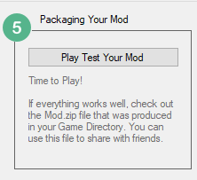

The final step is to Package Your Game, and begin your Play test.

Click on the Play Test Your mod button to start the game.
What's the difference between this Play button and the Play button in the SDX Launcher?
The Play button in the SDX Launcher will launch the game, and you can begin your play test.
The Play button in the SDX Mod Helper does the same thing, however, it does a few more things as well. If you are merging a few mods together, then there could be duplicate ItemIcons under your Mods folder now. The game will put warnings and errors in your build log, complaining about the duplicate icons.
The SDX Mod Helper will automatically move the icons around, and get rid of duplicates for you.
The SDX Mod Helper will also generate a Mod.zip file. This zip file contains all the files that have been modified, and will allow you to easily share your mods with other people.
Created with the Personal Edition of HelpNDoc: Qt Help documentation made easy